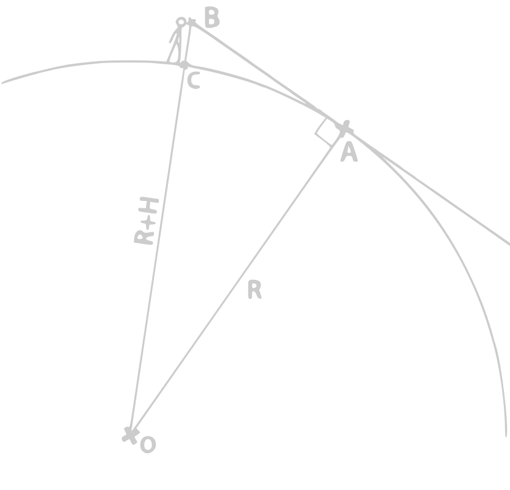

Distance d'horizon selon votre altitude
source: https://calculis.net/sohcahtoa#resultat
via ce site, j'ai fais un essai avec le triangle 3 4 5, voici un résumé :
-> cos(angle) = côté adjacent / hypoténuse
donc angle1 = cos-1(4/5)
-> tan(angle1) = côté opposé / côté adjacent
donc côté opposé = tan(angle1) × côté adjacent ~= 3

Votre altitude:
Distance de l'horizon: